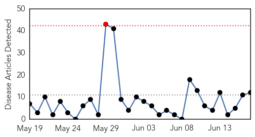

30 Day Trends
Web: 1 alerts, 0 warnings
Twitter: 0 alerts, 0 warnings
Top Articles:
- 0.938
- Measles cases in Hamilton rise to 60
- 0.920
- Measles - it's not over yet - health - national
- 0.871
- Measles numbers alarming, CDC doctor says
- 0.835
- Tennessee Department of Health urges Parents to think now about School Immunizations
- 0.822
- Many Amish Breaking Tradition, Getting Measles Vaccine
- 0.809
- Motlow, George Dickel, Manchester, Bonnaroo, Coffee County, Winchester, Monteagle, Tims Ford, Beechcraft, Lynchburg, Exchange, A.E.D.C.
- 0.797
- Schools act swiftly as measles cases climb
- 0.787
- TDH Urges Parents to Think Now About School Immunizations
- 0.783
- Deadly diseases crossing border with illegals
- 0.656
- Immunization Summit Brings Awareness of Measles Outbreak to W.Va.
- 0.601
- WV MetroNews – Measles making a comeback
- 0.508
- The Future of Vaccines Will Be Personalized
Top Tweets:
-
No tweets found for Jun 17, 2014
Web/News Articles
Tweets

Article Locations